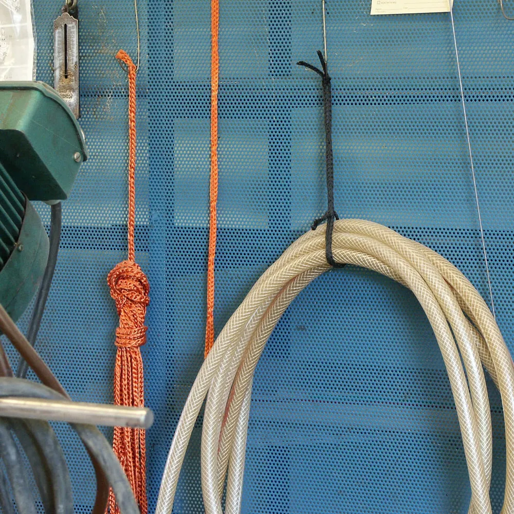

RunLock is a braided polyester rope with a loop every few centimetres. Two strands run side by side and are braided together at intervals; the free stretch between two joins is a loop. Because the rope can be pushed through its own loops, you can make a grip, a snare, a fixed loop or a lock in a second, without a knot, and undo it just as fast. It has been made in Sweden by Texsolv since 1983.
Every lock is the same move: the rope, or a fold of it, goes through one of its own loops. Under load the loop closes on the part that runs through it, and the harder you pull, the harder it grips. Slack it off and the grip opens again, because nothing has been tied. The four locks, step by step →
No 4 (4 mm) for washing lines, tent lines and hanging gear; No 6 for leashes and light lines; No 8 (6 mm) is the all-round size for cargo, trailers and roof racks; No 12 for heavier tie-downs; No 16 (10 mm) for dragging game and pulling by hand; No 20 (12 mm) for towing. When in doubt, take the next size up. All sizes with figures →
The published breaking strengths run from 170 kg for No 4 to 700 kg for No 20. They are set with a margin below the forces measured when one rope of each size was pulled to breaking at SP, the Swedish national testing institute (now RISE), in 2016; the No 20 held 843 kg in that test. The rating is the strength of the rope, not the load to work it at every day: pick a size with strength to spare. The test, size by size →
Yes, with the No 20, the towing line. Make a running loop over the tow ball, or a quick loop with fixed release through a closed ring, and start the pull gently: the 25 % stretch in the rope smooths the first metre out. For a heavy vehicle, use two lines together. RunLock is not a certified lifting sling and should not be used for lifting loads over people or for climbing.
A knot bends a rope sharply around itself and the outer fibres carry far more than the inner ones. A RunLock lock loads the braided join instead, which is made to carry the load straight through, so the rope keeps its full strength in the first loop and in every situation after it. In the SP test the ropes broke at the end loops around the shackles, not in the braid.
Yes. Cut in the middle of a loop, across both strands, then melt each cut end briefly with a lighter and press the two strands together so the end is sealed in one piece. A cut length is a complete tool: there is no eye to splice and no hardware to fit. That is also how the bulk roll is used.
Machine wash at 40 °C without fabric softener and let it dry hanging. Mud, salt and resin come out, and the colours stay. Polyester takes up almost no water, so the rope does not swell, stiffen or get heavy when wet.
It does not float: polyester is heavier than water. It has good resistance to UV light, salt water and petroleum products, keeps its flexibility in the cold, and a frozen RunLock still releases with one pull. Keep it away from exhausts and open fire: polyester melts at about 250 °C.
Yes. Pass the end of one rope through a loop of the other, then back through its own loop. The join holds like the rope itself and comes apart with one pull when the load is off. Join two ropes to reach further or to pull with more force.
Both are one piece of RunLock with a neck loop that is a running loop with a stop, so it tightens only as far as you set it: the controlled semi-choke. The dog leash is 1.8 m for the daily walk. The hunting leash is 1.8 to 2.7 m and its handle opens into a loop that fits around the upper body, for hands-free work in the forest. The leashes →
Fluorescent orange, fluorescent yellow, blue, black and white. The leashes and the snowmobile set come in a two-colour braid, black with fluorescent yellow or orange. Other colours are possible for larger orders. Colours →
In the webshop, shipped worldwide from Sweden. Shops and wholesalers open a business account in the same webshop and buy at reseller terms. Wholesale →
Yes, for larger orders. The rope is braided on our own machines in Tösse, so size, loop spacing, length and colour are all open: thinner than No 4 or thicker than No 20, loops only at the ends, a private colour. Made to your spec →
No. RunLock is a rope for pulling, tying down, hanging and leading. It is not a certified lifting sling or a climbing rope, and it must not be used for lifting loads over people or for any use where a failure would put someone at risk.
We would like to use Google Analytics to see which pages are read. No cookies are set unless you say yes. How we handle your data →